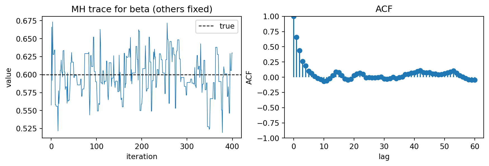

Metropolis-Hastings baseline for a one-parameter posterior.
Finite-difference HMC as a pedagogical gradient bridge.
Optional autodiff NUTS baseline (BlackJAX).
Shared validation pieces: traces, PPC, and small coverage checks.
3.2 Minimal MH demo: sampling a 1D Gaussian
Before applying MH to the SEIR model, it helps to sanity-check the implementation on a distribution where we know the answer. Below we sample from a standard normal target density using a Gaussian random-walk proposal.
import osimport numpy as npCI_PROFILE = os.environ.get("QUARTO_PROFILE") =="ci"or os.environ.get("CI") =="true"def ci(default: int, ci_value: int) ->int:"""Use smaller settings when rendering under the Quarto CI profile."""return ci_value if CI_PROFILE else defaultfrom diff_epi_inference.mcmc.mh import random_walk_metropolis_hastingsdef log_prob_standard_normal(x: np.ndarray) ->float:# Up to an additive constant: log N(x; 0, 1)return-0.5*float(np.sum(x**2))rng = np.random.default_rng(0)res = random_walk_metropolis_hastings( log_prob_standard_normal, x0=np.array([5.0]), proposal_std=1.0, n_steps=ci(5_000, 1_000), rng=rng,)accept_rate = res.accept_ratemean =float(np.mean(res.chain))std =float(np.std(res.chain))accept_rate, mean, std
(0.678, 0.07636268305930825, 1.1065715301835828)
The acceptance rate depends strongly on the proposal scale; in 1D, a value around 20–60% is typical for a reasonable random-walk step size.
3.2.1 Tuning proposal_std (random-walk MH)
For a Gaussian random-walk MH proposal, the proposal scale controls the trade-off between:
Too smallproposal_std → very high acceptance but tiny moves (high autocorrelation).
Too largeproposal_std → very low acceptance (many repeats).
Practical tuning guidance:
In 1D, an acceptance rate around 0.3–0.6 is often fine; the asymptotic optimum for a Gaussian target is about 0.44.
In higher dimensions, the optimal random-walk acceptance rate tends to be lower (often quoted around 0.2–0.3, with ~0.234 as a classical asymptotic result for i.i.d. Gaussian targets).
A simple workflow is:
Run a short warmup (e.g. 500–2,000 steps).
Adjust proposal_std up/down to hit a rough target acceptance.
Freeze the proposal scale for the main run (avoid adapting during sampling if you want a strictly Markov chain).
In this chapter we keep tuning manual and lightweight; later chapters can revisit more systematic adaptation.
3.3 Minimal MH demo: infer only beta in the SEIR running example
As a first epidemiological baseline, we infer only the transmission ratebeta, keeping the remaining parameters fixed. This is intentionally a small, well-posed problem: a 1D posterior that still exercises the full simulation + observation likelihood.
We will:
simulate a synthetic observed time series y from a known beta_true
define a log posterior in terms of log_beta = log(beta) (so proposals live on ℝ)
run random-walk MH and inspect the resulting posterior for beta
# --- Log posterior for log(beta) ---# Prior parameterisation note## We place a Gaussian prior directly on log_beta = log(beta):# log_beta ~ Normal(logbeta_prior_mean, logbeta_prior_sd)# This implies a lognormal prior on beta on its constrained (positive) support.# Because we sample in log space, we evaluate the prior density in terms of# log_beta, not beta; no extra Jacobian term is needed in the log posterior.## In both MH and HMC, the algorithms only use *differences* in log density, so# we routinely drop additive normalisation constants.from diff_epi_inference.models.seir_numpy_beta_only import make_log_post_logbeta_numpylogbeta_prior_mean =float(np.log(0.5))logbeta_prior_sd =0.5log_post_logbeta = make_log_post_logbeta_numpy( y_obs=y_obs, w_delay_pmf=w, sigma=sigma_fixed, gamma=gamma_fixed, s0=s0, e0=e0, i0=i0, r0=r0, dt=dt, steps=steps, reporting_rate=reporting_rate, dispersion=dispersion, logbeta_prior_mean=logbeta_prior_mean, logbeta_prior_sd=logbeta_prior_sd,)res = random_walk_metropolis_hastings( log_post_logbeta, x0=np.array([np.log(0.3)]), proposal_std=0.10, n_steps=ci(3_000, 800), rng=np.random.default_rng(1),)beta_chain = np.exp(res.chain[:, 0])# Crude burn-in for this demo (keep it robust to shorter CI runs).burn =min(500, beta_chain.shape[0] //2)beta_chain = beta_chain[burn:]accept_rate = res.accept_ratebeta_mean =float(np.mean(beta_chain))beta_q05, beta_q95 = [float(q) for q in np.quantile(beta_chain, [0.05, 0.95])]accept_rate, beta_mean, beta_q05, beta_q95
from diff_epi_inference.plotting.mcmc import plot_trace_and_acffig, _ = plot_trace_and_acf( beta_chain, true_value=beta_true, max_lag=60, title="MH trace for beta (others fixed)",)plt.show()

3.3.1 Posterior predictive check (MH)
A minimal posterior predictive check samples simulated observations from the posterior draws, then overlays predictive bands against the observed time series.
Algorithm: Gaussian random-walk proposals in unconstrained space.
Implementation notes:
Transform constrained parameters (positivity, simplex) to ℝ.
Adapt proposal scale during warmup only; then fix.
Outputs:
Acceptance rate
Autocorrelation / effective sample size
3.4 Minimal HMC demo: infer only beta (finite-difference gradients)
For a first gradient-based baseline, we can run HMC on the same 1D posterior as above. In a production setting, you would normally use autodiff + NUTS (e.g. NumPyro/BlackJAX) so that gradients are exact (up to solver tolerance) and step sizes / trajectory lengths are adapted automatically.
Here we use a deliberately minimal HMC implementation that estimates gradients by central finite differences.
Limitations of this baseline (important):
Computational cost: finite-difference gradients require 2 evaluations per parameterper leapfrog step. Even in 1D this adds up; in higher dimensions it quickly becomes impractical.
Numerical sensitivity: the finite-difference step size (grad_eps) must be tuned; too small → cancellation / noise, too large → biased gradients.
No adaptation / diagnostics: this minimal HMC does not adapt step sizes or trajectory lengths and does not report NUTS-style diagnostics (divergences, tree depth, energy).
Work in unconstrained parameter space (we do: x = log_beta). grad_eps is measured in that space.
Start with a conservative default like 1e-4 to 1e-3.
Sanity-check sensitivity by rerunning a short chain with grad_eps scaled by 10× (e.g. 1e-5, 1e-4, 1e-3) and verifying that posterior summaries (mean/interval) and acceptance rate are broadly stable.
How to spot problems:
Too small: gradients become dominated by numerical cancellation/roundoff. You may see very noisy acceptance rates, sticky chains, or you need an implausibly tiny step_size to avoid rejections.
Too large: gradients are biased (you are differentiating a smoothed/linearised version of the log density). Chains may mix but settle on the wrong posterior (summaries shift noticeably as you change grad_eps).
Despite these caveats, it is a useful pedagogical bridge between MH and a full autodiff + NUTS workflow.
3.4.2 Tuning step_size and n_leapfrog (HMC)
HMC performance is controlled mainly by two hyperparameters:
step_size (“epsilon”): the size of each leapfrog integrator step.
n_leapfrog (“L”): the number of leapfrog steps per proposal (trajectory length is roughly step_size * n_leapfrog).
A lightweight manual tuning workflow:
Start with a short warmup (e.g. 200–1,000 iterations).
Adjust step_size to hit a reasonable acceptance rate.
In practice, a target around 0.6–0.9 is common for HMC.
Too low → reduce step_size (integration error is too large).
Too high with slow exploration → increase step_size slightly or increase n_leapfrog.
Set n_leapfrog to get proposals that move across the posterior without “U-turning” too quickly. Very large n_leapfrog increases compute cost and can lead to wasted looping.
For NUTS, you typically target an acceptance probability (often called target_accept) around 0.8 by default, and rely on adaptation to set step sizes.
3.4.2.1 Divergences (NUTS-specific warning sign)
When using NUTS implementations (e.g. NumPyro/Stan/BlackJAX), always check for divergences. Divergences indicate that the integrator is failing in parts of the posterior (geometry is too sharp / step size too large), and the resulting draws may be biased. A common first response is to increase target_accept (smaller step sizes) and/or reparameterise.
from diff_epi_inference.mcmc.hmc import hamiltonian_monte_carlores_hmc = hamiltonian_monte_carlo( log_post_logbeta, x0=np.array([np.log(0.3)]), n_steps=ci(2_000, 250), step_size=0.02, n_leapfrog=ci(25, 12), grad_eps=1e-4, rng=np.random.default_rng(2),)beta_chain_hmc = np.exp(res_hmc.chain[:, 0])# Crude burn-in (robust to shorter CI runs).burn_hmc =min(500, beta_chain_hmc.shape[0] //2)beta_chain_hmc = beta_chain_hmc[burn_hmc:]accept_rate_hmc = res_hmc.accept_ratebeta_mean_hmc =float(np.mean(beta_chain_hmc))beta_q05_hmc, beta_q95_hmc = [float(q) for q in np.quantile(beta_chain_hmc, [0.05, 0.95])]accept_rate_hmc, beta_mean_hmc, beta_q05_hmc, beta_q95_hmc
3.4.4.2 Optional: NUTS for the SEIR beta-only posterior (JAX reimplementation)
To use NUTS on the SEIR running example, the log posterior must be JAX-traceable. The core simulator in this repo is NumPy-based, so below we re-implement the minimalbeta-only likelihood in jax.numpy (Euler step + delay convolution + NB likelihood).
This is intentionally scoped to the beta-only demo so we can keep the path self-contained.
Note: there is also an optional calibration/coverage smoke test for this NUTS path in tests/test_blackjax_nuts_seir_calibration_optional.py. It is skipped unless the nuts extra is installed (and is meant to catch obvious regressions in the JAX reimplementation).
In this project we use a small “core” of diagnostics repeatedly:
Trace plots (and where helpful, autocorrelation) to catch obvious mixing / non-stationarity problems.
R-hat (split \(\\hat{R}\)) and ESS as rough, chain-level summaries.
Posterior predictive checks (PPC) to ensure the fitted model can reproduce key features of the data.
Calibration / coverage smoke tests on synthetic data.
3.4.5.1 Trace plots
A trace plot is the cheapest sanity check: it should look like a stationary “hairy caterpillar” rather than a drifting trend. In the examples above we used a single chain and inspected the trace visually.
3.4.5.2 ESS and R-hat
Effective sample size (ESS) and split \(\\hat{R}\) are most meaningful when you run multiple independent chains. With ArviZ we can compute these summaries with a few lines.
import numpy as npimport arviz as azfrom diff_epi_inference.mcmc.mh import random_walk_metropolis_hastingsn_chains =4n_steps =2_000burn =500chains = []for seed inrange(n_chains): res_c = random_walk_metropolis_hastings( log_post_logbeta, x0=np.array([np.log(0.3)]), proposal_std=0.10, n_steps=n_steps, rng=np.random.default_rng(100+ seed), ) chains.append(np.exp(res_c.chain[burn:, 0]))beta_chains = np.stack(chains, axis=0) # (chain, draw)# ArviZ expects an InferenceData or an array with chain/draw dims.rhat =float(az.rhat(beta_chains))ess =float(az.ess(beta_chains))rhat, ess
(1.0032371688840005, 1404.1491120860317)
Interpretation pointers (rules of thumb, not laws):
\(\\hat{R}\) close to 1.00 (e.g. < 1.01–1.05 depending on context) suggests chains are mixing and agree.
Larger ESS is better; very small ESS indicates heavy autocorrelation and overconfident summaries.
These summaries do not replace PPC / calibration: it is possible for chains to mix well while the model is wrong.
3.4.5.3 Calibration smoke test (MH; beta only)
A minimal calibration check is to repeat the synthetic-data experiment many times and ask:
If we generate data at beta_true, does our nominal 90% posterior interval contain beta_true about 90% of the time?
This is not full simulation-based calibration (SBC), but it is a fast “is anything horribly wrong?” smoke test.
from collections import defaultdictby_beta = defaultdict(list)for r in results: by_beta[r.beta_true].append(r.contained)coverage_by_beta = {beta: float(np.mean(v)) for beta, v insorted(by_beta.items())}coverage_by_beta
We can repeat the same coverage experiment for the minimal HMC baseline. Because HMC here uses finite-difference gradients, we keep the chains very short.
by_beta_hmc = defaultdict(list)for r in results_hmc: by_beta_hmc[r.beta_true].append(r.contained)coverage_by_beta_hmc = {beta: float(np.mean(v)) for beta, v insorted(by_beta_hmc.items())}coverage_by_beta_hmc
MH and HMC provide strong non-amortised baselines for debugging model and likelihood behavior.
Even in small examples, PPC and calibration smoke checks are essential alongside trace diagnostics.
Optional NUTS (autodiff-based) is the most practical production baseline when dependencies are available.
Hoffman, Matthew D, and Andrew Gelman. 2014. “The No-u-Turn Sampler: Adaptively Setting Path Lengths in Hamiltonian Monte Carlo.”Journal of Machine Learning Research 15 (47): 1593–623.
Neal, Radford M. 2011. MCMC Using Hamiltonian Dynamics. Edited by Steve Brooks, Andrew Gelman, Galin Jones, and Xiao-Li Meng. Chapman; Hall/CRC.
Vehtari, Aki, Andrew Gelman, Daniel Simpson, Bob Carpenter, and Paul-Christian Bürkner. 2021. “Rank-Normalization, Folding, and Localization: An Improved \(\hat{R}\) for Assessing Convergence of MCMC.”Bayesian Analysis 16 (2): 667–718.